Learning Module 9 The Term Structure of Interest Rates: Spot, Par, and Forward Curves - Part 1: Introduction
Volume 6: Fixed Income
Learning Module 9 The Term Structure of Interest Rates: Spot, Par, and Forward Curves
Part 1/3: Introduction (PDF Pages 221–230)
Tập 6: Thu nhập Cố định (Fixed Income)
Học phần 9: Cấu trúc Kỳ hạn của Lãi suất: Đường cong Lãi suất Giao ngay, Đường cong Lãi suất Ngang giá và Đường cong Lãi suất Kỳ hạn (The Term Structure of Interest Rates: Spot, Par, and Forward Curves)
Phần 1/3: Giới thiệu (Trang PDF 221–230)
L E A R N I N G M O D U L E
H Ọ C P H Ầ N
9
9
The Term Structure of Interest Rates: Spot, Par, and Forward Curves
Cấu trúc Kỳ hạn của Lãi suất: Đường cong Lãi suất Giao ngay, Đường cong Lãi suất Ngang giá và Đường cong Lãi suất Kỳ hạn (The Term Structure of Interest Rates: Spot, Par, and Forward Curves)
LEARNING OUTCOMES
MỤC TIÊU HỌC TẬP (LEARNING OUTCOMES)
| Mastery | The candidate should be able to: |
|---|---|
| define spot rates and the spot curve, and calculate the price of a bond using spot rates |
|
| define par and forward rates, and calculate par rates, forward rates from spot rates, spot rates from forward rates, and the price of a bond using forward rates |
|
| compare the spot curve, par curve, and forward curve |
| Mức độ thành thạo | Ứng viên cần có khả năng: |
|---|---|
| định nghĩa lãi suất giao ngay (spot rates) và đường cong lãi suất giao ngay (spot curve), đồng thời tính giá của một trái phiếu bằng cách sử dụng lãi suất giao ngay | |
| định nghĩa lãi suất ngang giá (par rates) và lãi suất kỳ hạn (forward rates), đồng thời tính lãi suất ngang giá, lãi suất kỳ hạn từ lãi suất giao ngay, lãi suất giao ngay từ lãi suất kỳ hạn, và giá của một trái phiếu bằng cách sử dụng lãi suất kỳ hạn | |
| so sánh đường cong lãi suất giao ngay (spot curve), đường cong lãi suất ngang giá (par curve), và đường cong lãi suất kỳ hạn (forward curve) |
INTRODUCTION
GIỚI THIỆU (INTRODUCTION)
1
1
Prior lessons priced fixed-income instruments by discounting all future cash flows using a single interest rate, such as the yield-to-maturity or a market reference rate (MRR) plus a discount margin. The next three lessons relax this assumption by introducing the term structure of interest rates, or the fact that interest rates vary with time-to-maturity. The ideal data to use for term structure analysis are default-risk-free zero-coupon bonds, known as spot rates or the spot curve. Since these are generally not directly observable, various estimation techniques are used. The spot curve is used to derive two other important yield curves: the par curve and the forward curve. A par curve involves bond yields for hypothetical benchmark securities priced at par, while the forward curve involves rates for interest periods starting in the future. All three of these curves are fundamental to fixed-income analysis and other applications because they represent default-risk-free rates of return for time periods that start today and in the future. We show the pricing of bonds using these different rates and establish their relationships.
Các bài học trước đã định giá các công cụ thu nhập cố định bằng cách chiết khấu tất cả các dòng tiền tương lai theo một mức lãi suất duy nhất, chẳng hạn như lợi suất đáo hạn (yield-to-maturity) hoặc lãi suất tham chiếu thị trường (market reference rate – MRR) cộng với biên độ chiết khấu (discount margin). Ba bài học tiếp theo sẽ nới lỏng giả định này bằng cách giới thiệu cấu trúc kỳ hạn của lãi suất (term structure of interest rates), hay thực tế là lãi suất thay đổi theo thời gian đáo hạn. Dữ liệu lý tưởng để sử dụng cho việc phân tích cấu trúc kỳ hạn là các trái phiếu không trả lãi định kỳ (zero-coupon bonds) phi rủi ro vỡ nợ, được gọi là lãi suất giao ngay (spot rates) hoặc đường cong lãi suất giao ngay (spot curve). Vì những dữ liệu này nhìn chung không thể quan sát trực tiếp được, nên nhiều kỹ thuật ước tính khác nhau được sử dụng. Đường cong lãi suất giao ngay được sử dụng để suy ra hai đường cong lợi suất quan trọng khác: đường cong lãi suất ngang giá (par curve) và đường cong lãi suất kỳ hạn (forward curve). Đường cong lãi suất ngang giá liên quan đến lợi suất trái phiếu của các chứng khoán chuẩn giả định được định giá ngang mệnh giá (at par), trong khi đường cong lãi suất kỳ hạn liên quan đến lãi suất cho các kỳ tính lãi bắt đầu trong tương lai. Cả ba đường cong này đều là nền tảng cho phân tích thu nhập cố định và các ứng dụng khác bởi vì chúng đại diện cho các tỷ suất sinh lợi phi rủi ro vỡ nợ cho các khoảng thời gian bắt đầu từ ngày hôm nay và trong tương lai. Chúng tôi sẽ trình bày việc định giá trái phiếu bằng cách sử dụng các mức lãi suất khác nhau này và thiết lập mối quan hệ giữa chúng.
Most of the examples and exhibits used throughout the reading can be downloaded as a Microsoft Excel workbook. Each worksheet in the workbook is labeled with the corresponding example or exhibit number in the text.
Hầu hết các ví dụ và bảng biểu được sử dụng xuyên suốt bài đọc có thể được tải xuống dưới dạng sổ làm việc Microsoft Excel. Mỗi trang tính trong sổ làm việc được gắn nhãn với số ví dụ hoặc số bảng biểu tương ứng trong văn bản.
LEARNING MODULE OVERVIEW
TỔNG QUAN HỌC PHẦN (LEARNING MODULE OVERVIEW)
-
Spot rates are market discount rates on default-risk-free zero-coupon bonds, sometimes referred to as zero rates. By using a sequence of spot rates in calculating bond prices, a no-arbitrage bond price is obtained.
-
A par rate is the market discount rate for a specific maturity that would result in a bond priced at par. A par rate is derived from the spot rates up to and including the maturity date.
-
Implied forward rates are calculated using spot rates and can be interpreted as an incremental, or marginal, return for extending the time-to-maturity for an additional time period. As such, they reflect a breakeven reinvestment rate.
-
Since par and forward rates can be derived from spot rates, the shape of the spot curve is closely related to the shape of the par and forward curves.
-
In upward-sloping term structures, par rates will be lower than their corresponding spot rates and forward rates will be greater than spot rates. In downward-sloping term structures, par rates will be greater than spot rates and forward rates will be lower than spot rates.
-
Lãi suất giao ngay (spot rates) là lãi suất chiết khấu thị trường trên các trái phiếu không trả lãi định kỳ (zero-coupon bonds) phi rủi ro vỡ nợ, đôi khi được gọi là lãi suất zero (zero rates). Bằng cách sử dụng một chuỗi các lãi suất giao ngay trong việc tính giá trái phiếu, ta thu được mức giá trái phiếu không có chênh lệch giá (no-arbitrage bond price).
-
Lãi suất ngang giá (par rate) là lãi suất chiết khấu thị trường cho một kỳ hạn cụ thể dẫn đến việc một trái phiếu được định giá ngang mệnh giá (at par). Lãi suất ngang giá được suy ra từ các lãi suất giao ngay tính đến và bao gồm cả ngày đáo hạn.
-
Lãi suất kỳ hạn hàm ý (implied forward rates) được tính bằng cách sử dụng lãi suất giao ngay và có thể được diễn giải là tỷ suất sinh lợi tăng thêm, hay cận biên (incremental, or marginal, return), cho việc kéo dài thời gian đáo hạn thêm một kỳ nữa. Do đó, chúng phản ánh một lãi suất tái đầu tư hòa vốn (breakeven reinvestment rate).
-
Vì lãi suất ngang giá và lãi suất kỳ hạn có thể được suy ra từ lãi suất giao ngay, nên hình dạng của đường cong lãi suất giao ngay có mối liên hệ chặt chẽ với hình dạng của đường cong lãi suất ngang giá và đường cong lãi suất kỳ hạn.
-
Trong các cấu trúc kỳ hạn dốc lên (upward-sloping term structures), lãi suất ngang giá sẽ thấp hơn lãi suất giao ngay tương ứng của chúng và lãi suất kỳ hạn sẽ lớn hơn lãi suất giao ngay. Trong các cấu trúc kỳ hạn dốc xuống (downward-sloping term structures), lãi suất ngang giá sẽ lớn hơn lãi suất giao ngay và lãi suất kỳ hạn sẽ thấp hơn lãi suất giao ngay.
LEARNING MODULE SELF-ASSESSMENT
TỰ ĐÁNH GIÁ HỌC PHẦN (LEARNING MODULE SELF-ASSESSMENT)
These initial questions are intended to help you gauge your current level of understanding of this learning module.
Các câu hỏi ban đầu này nhằm giúp bạn tự đánh giá mức độ hiểu biết hiện tại của mình về học phần này.
- Calculate the price and yield-to-maturity (YTM) of a 1% coupon, three-year bond with par value of 100 given the following spot rates:
- Tính giá và lợi suất đáo hạn (YTM) của một trái phiếu kỳ hạn 3 năm, lãi suất coupon 1% có mệnh giá là 100 với các lãi suất giao ngay sau đây:
| 1-year | 1.0% |
|---|---|
| 2-year | 1.5% |
| 3-year | 2.0% |
| 1 năm | 1,0% |
|---|---|
| 2 năm | 1,5% |
| 3 năm | 2,0% |
Solution:
Lời giải:
The price is 97.135:
Mức giá là 97,135:
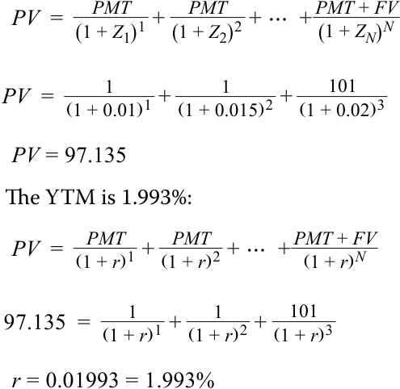
YTM là 1,993%:
- Define what a par rate represents in the context of bond pricing.
- Định nghĩa những gì mà lãi suất ngang giá (par rate) đại diện trong bối cảnh định giá trái phiếu.
Solution:
Lời giải:
- The par rate is the yield-to-maturity that makes the present value of a bond’s cash flows (i.e., its price) equal to its par or face value.
- Calculate an implied one-year forward rate two years from now (i.e., 2y1y) given the following spot rates, assuming annual compounding:
- Lãi suất ngang giá là lợi suất đáo hạn làm cho giá trị hiện tại của các dòng tiền của một trái phiếu (tức là giá của nó) bằng với mệnh giá (par or face value) của nó.
- Tính lãi suất kỳ hạn 1 năm hàm ý sau hai năm kể từ bây giờ (tức là 2y1y) với các lãi suất giao ngay sau đây, giả định ghép lãi hàng năm:
| 1-year | 1.0% |
|---|---|
| 2-year | 1.5% |
| 3-year | 2.0% |
| 1 năm | 1,0% |
|---|---|
| 2 năm | 1,5% |
| 3 năm | 2,0% |
Solution:
Lời giải:
- (1 + ZA )A × (1 + IFRA,B – A )B−A = (1 + ZB )B .
- $$(1 + Z_A)^A \times (1 + IFR_{A,B-A})^{B-A} = (1 + Z_B)^B$$
(1 + 0.01)1 × (1 + IFR 2,1)2 = (1 + 0.02)3 . IFR 2,1 = 2.50%.
- Explain the economic meaning of the forward rate result calculated in Question 3.
- Giải thích ý nghĩa kinh tế của kết quả lãi suất kỳ hạn được tính trong Câu hỏi 3.
Solution:
Lời giải:
The one-year forward rate two years from now (2y1y) of 3.01% implies that investors expect the one-year interest rate to be 3.01% at the end of two years. This reflects the rate at which reinvestment would yield the same results over a three-year horizon regardless of whether the investor initially bought a two-year bond versus a three-year bond.
Lãi suất kỳ hạn 1 năm sau hai năm kể từ bây giờ (2y1y) ở mức 3,01% ngụ ý rằng các nhà đầu tư kỳ vọng lãi suất 1 năm sẽ là 3,01% vào cuối năm thứ hai. Điều này phản ánh mức lãi suất mà tại đó việc tái đầu tư sẽ mang lại kết quả như nhau trong thời hạn đầu tư 3 năm bất kể nhà đầu tư ban đầu mua một trái phiếu kỳ hạn 2 năm hay một trái phiếu kỳ hạn 3 năm.
- Contrast spot and forward rates.
- Đối chiếu lãi suất giao ngay (spot rates) và lãi suất kỳ hạn (forward rates).
Solution:
Lời giải:
Spot rates reflect borrowing and investing rates for funds immediately (or in the next few days) over the specified tenor, while forward rates reflect rates applicable to agreements to borrow or invest beginning on a future date for a specified tenor.
Lãi suất giao ngay phản ánh lãi suất đi vay và đầu tư đối với nguồn vốn ngay lập tức (hoặc trong vài ngày tới) trong kỳ hạn đã xác định, trong khi lãi suất kỳ hạn phản ánh lãi suất áp dụng cho các thỏa thuận đi vay hoặc đầu tư bắt đầu vào một ngày trong tương lai cho một kỳ hạn đã xác định.
- True or false: One-year forward rates are higher compared to their corresponding spot rates when the spot rate curve is downward sloping.
-
A. True
-
B. False
- Đúng hay sai: Lãi suất kỳ hạn 1 năm cao hơn so với lãi suất giao ngay tương ứng của chúng khi đường cong lãi suất giao ngay dốc xuống (downward sloping).
-
A. Đúng (True)
-
B. Sai (False)
Solution:
Lời giải:
False. When the spot curve is downward sloping, the one-year forward rate curve will lie below the spot rate curve. Declining spot rates for longer maturities imply that investors should expect lower rates of reinvestment in future years, and the forward curve reflects these expectations.
Sai (False). Khi đường cong lãi suất giao ngay dốc xuống, đường cong lãi suất kỳ hạn 1 năm sẽ nằm bên dưới đường cong lãi suất giao ngay. Lãi suất giao ngay giảm dần đối với các kỳ hạn dài hơn ngụ ý rằng các nhà đầu tư nên kỳ vọng mức lãi suất tái đầu tư thấp hơn trong những năm tương lai, và đường cong lãi suất kỳ hạn phản ánh những kỳ vọng này.
2
2
MATURITY STRUCTURE OF INTEREST RATES AND SPOT RATES
CẤU TRÚC KỲ HẠN CỦA LÃI SUẤT VÀ LÃI SUẤT GIAO NGAY (MATURITY STRUCTURE OF INTEREST RATES AND SPOT RATES)
define spot rates and the spot curve, and calculate the price of a bond using spot rates
định nghĩa lãi suất giao ngay và đường cong lãi suất giao ngay, đồng thời tính giá của một trái phiếu bằng cách sử dụng lãi suất giao ngay
Maturity Structure of Interest Rates
Cấu trúc Kỳ hạn của Lãi suất (Maturity Structure of Interest Rates)
Suppose that the yield-to-maturity is higher on one bond compared to another bond. There are several possible reasons for the difference, including credit risk, different currencies, liquidity, tax differences, and the periodicity assumption used in the yield calculation. Credit risk and currency differences were demonstrated in earlier lessons where Romania’s (Ministry of Finance) 30-year euro-denominated bonds were issued at a 4.657% yield-to-maturity, a 411 bp spread over Federal Republic of Germany bonds. Another reason bonds may have different yields-to-maturity is that they have different times-to-maturity. This factor explaining the differences in yields is called the maturity structure of interest rates or term structure of interest rates .
Giả sử lợi suất đáo hạn của một trái phiếu cao hơn so với một trái phiếu khác. Có một số lý do khả dĩ giải thích cho sự khác biệt này, bao gồm rủi ro tín dụng, các đồng tiền khác nhau, tính thanh khoản, sự khác biệt về thuế, và giả định về định kỳ (periodicity) được sử dụng trong phép tính lợi suất. Sự khác biệt về rủi ro tín dụng và tiền tệ đã được chứng minh trong các bài học trước, nơi các trái phiếu định danh bằng đồng euro kỳ hạn 30 năm của Romania (Bộ Tài chính) được phát hành ở mức lợi suất đáo hạn 4,657%, tức mức chênh lệch 411 bp so với trái phiếu của Cộng hòa Liên bang Đức. Một lý do khác khiến các trái phiếu có thể có lợi suất đáo hạn khác nhau là chúng có thời gian đáo hạn khác nhau. Nhân tố giải thích sự khác biệt về lợi suất này được gọi là cấu trúc đáo hạn của lãi suất (maturity structure of interest rates) hay cấu trúc kỳ hạn của lãi suất (term structure of interest rates).
Term structure is best analyzed using bonds that have all the same properties other than time-to-maturity; that is, the bonds should be denominated in the same currency and have the same credit risk, liquidity, tax status, and periodicity assumption and they should have the same coupon rate so that they each have the same degree of coupon reinvestment risk. This ideal dataset would be yields-to-maturity on a series of default-risk-free zero-coupon bonds, known as spot rates , for a full range of maturities. Developed market sovereign bonds are typically used for this purpose, because they represent the lowest default risk among issuers in a given market. Collectively, this dataset is the government bond spot curve , sometimes called the zero or “strip” curve (because the coupon payments are “stripped” off the bonds).
Cấu trúc kỳ hạn được phân tích tốt nhất bằng cách sử dụng các trái phiếu có tất cả các đặc tính giống nhau ngoại trừ thời gian đáo hạn; nghĩa là, các trái phiếu phải được định danh bằng cùng một đồng tiền và có cùng rủi ro tín dụng, tính thanh khoản, tình trạng thuế, và giả định về định kỳ, đồng thời chúng phải có cùng lãi suất coupon để mỗi trái phiếu có cùng mức độ rủi ro tái đầu tư coupon (coupon reinvestment risk). Bộ dữ liệu lý tưởng này sẽ là lợi suất đáo hạn trên một chuỗi các trái phiếu không trả lãi định kỳ (zero-coupon bonds) phi rủi ro vỡ nợ, được gọi là lãi suất giao ngay (spot rates), cho đầy đủ các kỳ hạn. Trái phiếu chính phủ của các thị trường phát triển thường được sử dụng cho mục đích này, bởi vì chúng đại diện cho mức rủi ro vỡ nợ thấp nhất trong số các tổ chức phát hành trên một thị trường nhất định. Tập hợp lại, bộ dữ liệu này là đường cong lãi suất giao ngay (spot curve) của trái phiếu chính phủ, đôi khi được gọi là đường cong zero hoặc đường cong “strip” (bởi vì các khoản thanh toán coupon bị “tách” – “stripped” – ra khỏi trái phiếu).
The government bond spot curve is ideal for analyzing maturity structure because it best meets the “other things being equal” assumption. These government bonds presumably have the same currency, credit risk, liquidity, and tax status. Most importantly, as zero-coupon bonds, they have no coupon reinvestment risk. A government bond spot curve is illustrated in Exhibit 1 for maturities ranging from 1 to 30 years. The annual yields are stated on a semiannual bond basis, which facilitates comparison to coupon-bearing bonds that make semiannual payments, like corporate bonds in many markets.
Đường cong lãi suất giao ngay của trái phiếu chính phủ là lý tưởng để phân tích cấu trúc đáo hạn bởi vì nó đáp ứng tốt nhất giả định “các yếu tố khác không đổi” (“other things being equal”). Các trái phiếu chính phủ này được cho là có cùng đồng tiền, rủi ro tín dụng, tính thanh khoản, và tình trạng thuế. Quan trọng nhất, với tư cách là trái phiếu không trả lãi định kỳ, chúng không có rủi ro tái đầu tư coupon. Đường cong lãi suất giao ngay của trái phiếu chính phủ được minh họa trong Bảng 1 cho các kỳ hạn từ 1 đến 30 năm. Lợi suất hàng năm được biểu thị trên cơ sở trái phiếu trả lãi nửa năm một lần (semiannual bond basis), giúp thuận tiện cho việc so sánh với các trái phiếu trả coupon thực hiện thanh toán nửa năm một lần, giống như trái phiếu doanh nghiệp ở nhiều thị trường.
Exhibit 1: Government Bond Spot (Zero) Curve
Bảng 1: Đường cong Lãi suất Giao ngay (Zero) của Trái phiếu Chính phủ (Exhibit 1: Government Bond Spot (Zero) Curve)
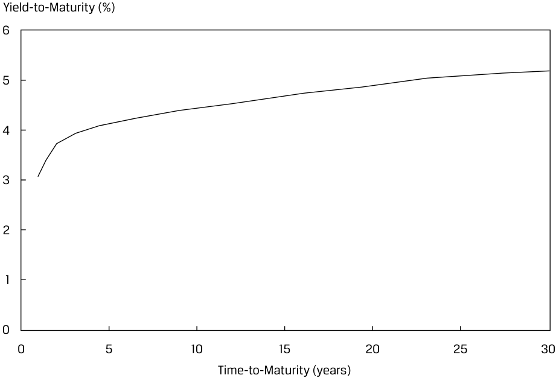
Chú thích hình ảnh: - Trục tung: Lợi suất đáo hạn (Yield-to-Maturity) (%) (từ 0 đến 6) - Trục hoành: Thời gian đáo hạn (Time-to-Maturity) (năm) (từ 0 đến 30)
The spot curve in Exhibit 1 is upward sloping and flattens for longer times-to-maturity, meaning that the longer-term government bonds have higher yields than the shorter-term bonds. This pattern is typical under normal market conditions. Sometimes, a spot curve is downward sloping in that shorter-term yields are higher than longer-term yields. Such downward-sloping spot curves are called inverted yield curves. Theories that attempt to explain the shape of the yield curve and its implications for future financial market conditions are covered later.
Đường cong lãi suất giao ngay trong Bảng 1 dốc lên và phẳng dần ở các thời gian đáo hạn dài hơn, có nghĩa là các trái phiếu chính phủ dài hạn hơn có lợi suất cao hơn so với các trái phiếu ngắn hạn hơn. Mô hình này là điển hình trong các điều kiện thị trường bình thường. Đôi khi, đường cong lãi suất giao ngay lại dốc xuống ở chỗ lợi suất ngắn hạn hơn lại cao hơn lợi suất dài hạn hơn. Những đường cong lãi suất giao ngay dốc xuống như vậy được gọi là đường cong lợi suất đảo ngược (inverted yield curves). Các lý thuyết tìm cách giải thích hình dạng của đường cong lợi suất và những hàm ý của nó đối với các điều kiện thị trường tài chính trong tương lai sẽ được đề cập sau.
While a spot curve comprised of zero-coupon government bonds is ideal for analysis, there are several practical issues to contend with. First, most actively traded government bonds make coupon payments. These coupon bonds might not have the same liquidity and tax status. Older (“seasoned”) bonds tend to be less liquid than newly issued debt because they are owned by “buy-and-hold” institutional and retail investors. Governments issue new debt for regular times-to-maturity—for instance, 5-year and 10-year bonds. The current 6-year bond could be a 10-year bond that was issued four years ago. Also, because interest rates fluctuate, older bonds can be priced at a discount or premium to par value, which can lead to tax differences because some tax jurisdictions distinguish capital gains and losses from interest income.
Mặc dù một đường cong lãi suất giao ngay bao gồm các trái phiếu chính phủ không trả lãi định kỳ là lý tưởng cho việc phân tích, nhưng có một số vấn đề thực tiễn cần phải giải quyết. Thứ nhất, hầu hết các trái phiếu chính phủ được giao dịch sôi động đều thực hiện thanh toán coupon. Các trái phiếu trả coupon này có thể không có cùng tính thanh khoản và tình trạng thuế. Các trái phiếu cũ hơn (đã lưu hành lâu – “seasoned”) có xu hướng kém thanh khoản hơn so với các khoản nợ mới phát hành bởi vì chúng thuộc sở hữu của các nhà đầu tư tổ chức và cá nhân theo chiến lược “mua và nắm giữ” (“buy-and-hold”). Các chính phủ phát hành nợ mới cho các thời gian đáo hạn định kỳ—chẳng hạn, trái phiếu kỳ hạn 5 năm và 10 năm. Trái phiếu kỳ hạn 6 năm hiện tại có thể là một trái phiếu kỳ hạn 10 năm đã được phát hành cách đây 4 năm. Ngoài ra, bởi vì lãi suất biến động, các trái phiếu cũ hơn có thể được định giá ở mức chiết khấu hoặc phần trội so với mệnh giá, điều này có thể dẫn đến sự khác biệt về thuế bởi vì một số khu vực tài phán thuế phân biệt giữa lãi và lỗ vốn (capital gains and losses) với thu nhập tiền lãi (interest income).
In practice, therefore, only the most recently issued and actively traded government bonds are used to build a yield curve. These bonds have similar liquidity, and because they are priced closer to par value, they have fewer tax effects. Additionally, because there are limited data for the full range of maturities, interpolation is used to complete the curve. Exhibit 2 illustrates a yield curve for a government that issues 2-year, 3-year, 5-year, 7-year, 10-year, and 30-year bonds that make semiannual coupon payments. Straight-line interpolation is used between those points on the yield curve.
Do đó, trên thực tế, chỉ những trái phiếu chính phủ mới được phát hành gần đây nhất và được giao dịch sôi động nhất mới được sử dụng để xây dựng đường cong lợi suất. Những trái phiếu này có tính thanh khoản tương tự nhau, và bởi vì chúng được định giá gần với mệnh giá hơn, nên chúng có ít tác động về thuế hơn. Thêm vào đó, bởi vì có dữ liệu hạn chế cho đầy đủ các kỳ hạn, phương pháp nội suy (interpolation) được sử dụng để hoàn thiện đường cong. Bảng 2 minh họa một đường cong lợi suất cho một chính phủ phát hành các trái phiếu kỳ hạn 2 năm, 3 năm, 5 năm, 7 năm, 10 năm, và 30 năm thực hiện thanh toán coupon nửa năm một lần. Phương pháp nội suy tuyến tính (straight-line interpolation) được sử dụng giữa các điểm đó trên đường cong lợi suất.
Exhibit 2: Government Coupon Bond Yield Curve
Bảng 2: Đường cong Lợi suất Trái phiếu Chính phủ Trả lãi Coupon (Exhibit 2: Government Coupon Bond Yield Curve)
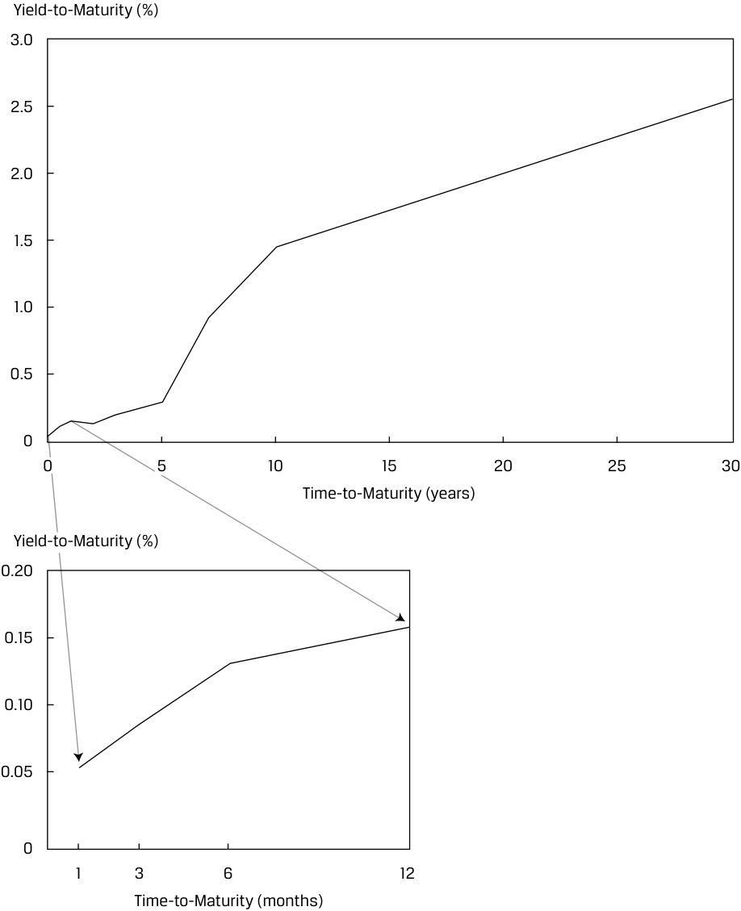
Chú thích hình ảnh: - Biểu đồ chính: Trục tung: Lợi suất đáo hạn (Yield-to-Maturity) (%) (0 đến 3,0); Trục hoành: Thời gian đáo hạn (Time-to-Maturity) (năm) (0 đến 30). - Biểu đồ phóng to (góc dưới): Trục tung: Lợi suất đáo hạn (Yield-to-Maturity) (%) (0 đến 0,20); Trục hoành: Thời gian đáo hạn (Time-to-Maturity) (tháng) (1, 3, 6, 12).
Exhibit 2 also includes yields for short-term government securities having 1 month, 3 months, 6 months, and 12 months to maturity. Although these money market instruments are issued and traded on a discount rate basis, they are converted to bond equivalent yields (i.e., add-on rates with a 365-day year). All bonds on the yield curve should also be converted to the same periodicity in order to facilitate comparisons across times-to-maturity. Conversion from discount rates to bond equivalent yields and across periodicities was demonstrated in prior lessons.
Bảng 2 cũng bao gồm lợi suất cho các chứng khoán chính phủ ngắn hạn có thời gian đáo hạn là 1 tháng, 3 tháng, 6 tháng, và 12 tháng. Mặc dù các công cụ thị trường tiền tệ này được phát hành và giao dịch trên cơ sở lãi suất chiết khấu, nhưng chúng được chuyển đổi sang lợi suất tương đương trái phiếu (bond equivalent yields – tức là lãi suất cộng thêm với một năm 365 ngày). Tất cả các trái phiếu trên đường cong lợi suất cũng cần được chuyển đổi sang cùng một định kỳ (periodicity) nhằm tạo thuận lợi cho việc so sánh giữa các thời gian đáo hạn khác nhau. Việc chuyển đổi từ lãi suất chiết khấu sang lợi suất tương đương trái phiếu và giữa các định kỳ đã được trình bày trong các bài học trước.
Bond Pricing Using Spot Rates
Định giá Trái phiếu Sử dụng Lãi suất Giao ngay (Bond Pricing Using Spot Rates)
Since interest rates vary by maturity and have a term structure, we can price bonds using a sequence of discount rates that correspond to the cash flow dates. One such sequence, representing default-risk-free rates, is the spot curve. Bond prices determined using spot rates establish “no-arbitrage” prices; if a bond’s price differs from its no-arbitrage value, an arbitrage opportunity exists in the absence of transaction costs.
Vì lãi suất thay đổi theo kỳ hạn và có cấu trúc kỳ hạn, chúng ta có thể định giá trái phiếu bằng cách sử dụng một chuỗi các lãi suất chiết khấu tương ứng với các ngày phát sinh dòng tiền. Một chuỗi như vậy, đại diện cho các mức lãi suất phi rủi ro vỡ nợ, chính là đường cong lãi suất giao ngay (spot curve). Giá trái phiếu được xác định bằng cách sử dụng lãi suất giao ngay sẽ thiết lập các mức giá “không có chênh lệch giá” (“no-arbitrage” prices); nếu giá của một trái phiếu khác với giá trị không có chênh lệch giá của nó, một cơ hội kinh doanh chênh lệch giá (arbitrage opportunity) sẽ tồn tại trong điều kiện không có chi phí giao dịch.
Suppose that the one-year spot rate is 2%, the two-year spot rate is 3%, and the three-year spot rate is 4%. Then, the price of a three-year bond that makes a 5% annual coupon payment is 102.960:
Giả sử lãi suất giao ngay 1 năm là 2%, lãi suất giao ngay 2 năm là 3%, và lãi suất giao ngay 3 năm là 4%. Khi đó, giá của một trái phiếu kỳ hạn 3 năm thanh toán coupon hàng năm ở mức 5% là 102,960:
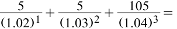
4.902 + 4.713 + 93.345 = 102.960.
$4.902 + 4.713 + 93.345 = 102.960$.
This three-year bond is priced at a premium, so its yield-to-maturity must be less than its 5% coupon rate. Using the basic bond pricing formula, the yield-to-maturity is 3.935%:
Trái phiếu kỳ hạn 3 năm này được định giá ở mức phần trội (at a premium), vì vậy lợi suất đáo hạn của nó phải thấp hơn mức lãi suất coupon 5% của nó. Sử dụng công thức định giá trái phiếu cơ bản, lợi suất đáo hạn là 3,935%:
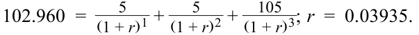
If the cash flows are discounted using the yield-to-maturity, the same price is obtained:
Nếu các dòng tiền được chiết khấu bằng cách sử dụng lợi suất đáo hạn, ta cũng thu được mức giá tương tự:
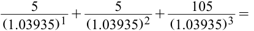
4.811 + 4.629 + 93.520 = 102.960.
$4.811 + 4.629 + 93.520 = 102.960$.
Notice that the present values of the individual cash flows discounted using spot rates differ from those discounted using the yield-to-maturity. The present value of the first coupon payment is 4.902 when discounted at 2%, but it is 4.811 when discounted at 3.935%. The present value of the final cash flow, which includes the redemption of principal, is 93.345 at 4% and 93.520 at 3.935%. Nevertheless, the sum of the present values using either approach is 102.960.
Hãy chú ý rằng giá trị hiện tại của từng dòng tiền riêng lẻ được chiết khấu bằng lãi suất giao ngay khác với khi được chiết khấu bằng lợi suất đáo hạn. Giá trị hiện tại của khoản thanh toán coupon đầu tiên là 4,902 khi được chiết khấu ở mức 2%, nhưng là 4,811 khi được chiết khấu ở mức 3,935%. Giá trị hiện tại của dòng tiền cuối cùng, bao gồm cả khoản hoàn trả tiền gốc, là 93,345 ở mức 4% và 93,520 ở mức 3,935%. Tuy nhiên, tổng giá trị hiện tại khi sử dụng một trong hai phương pháp đều là 102,960.
Equation 1 is a general formula for calculating a bond price given the sequence of spot rates. Note that for pricing a bond with a different risk profile than the spot curve (such as credit risk, as for corporate bonds, for example), a spread would have to be added to the spot rates.
Phương trình 1 là một công thức tổng quát để tính giá trái phiếu khi biết chuỗi các lãi suất giao ngay. Lưu ý rằng để định giá một trái phiếu có hồ sơ rủi ro khác với đường cong lãi suất giao ngay (chẳng hạn như rủi ro tín dụng, ví dụ như đối với trái phiếu doanh nghiệp), một mức chênh lệch (spread) sẽ phải được cộng thêm vào các lãi suất giao ngay.
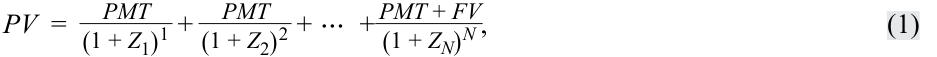
where
Z1 is the spot rate, or zero-coupon yield or zero rate, for period 1
trong đó:
Z 2 is the spot rate, or zero-coupon yield or zero rate, for period 2
-
$Z_1$ là lãi suất giao ngay (spot rate), hay lợi suất trái phiếu không trả lãi định kỳ (zero-coupon yield) hoặc lãi suất zero (zero rate), cho kỳ 1
-
$Z_2$ là lãi suất giao ngay, hay lợi suất trái phiếu không trả lãi định kỳ hoặc lãi suất zero, cho kỳ 2
-
$Z_N$ là lãi suất giao ngay, hay lợi suất trái phiếu không trả lãi định kỳ hoặc lãi suất zero, cho kỳ $N$
ZN is the spot rate, or zero-coupon yield or zero rate, for period N
We’ll use spot rates on Canadian and Australian government bonds to demonstrate bond pricing with spot rates.
Chúng ta sẽ sử dụng lãi suất giao ngay trên trái phiếu chính phủ Canada và Úc để minh họa việc định giá trái phiếu bằng lãi suất giao ngay.
Exhibit 3: Government Bond Spot Rates: Canada and Australia
Bảng 3: Lãi suất Giao ngay của Trái phiếu Chính phủ: Canada và Úc (Exhibit 3: Government Bond Spot Rates: Canada and Australia)
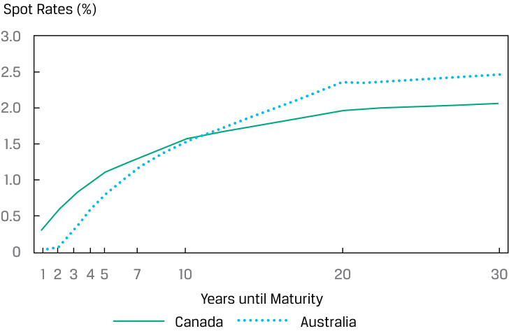
Chú thích hình ảnh: - Trục tung: Lãi suất giao ngay (Spot Rates) (%) (từ 0 đến 3,0) - Trục hoành: Số năm cho đến khi đáo hạn (Years until Maturity) (1, 2, 3, 4, 5, 7, 10, 20, 30) - Đường biểu diễn: Canada và Úc (Australia)
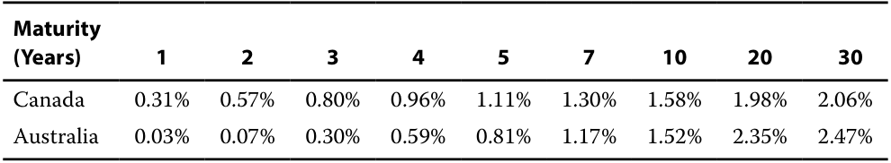
EXAMPLE 1
| Kỳ hạn (Maturity) (Năm) | 1 | 2 | 3 | 4 | 5 | 7 | 10 | 20 | 30 |
|---|---|---|---|---|---|---|---|---|---|
| Canada | 0,31% | 0,57% | 0,80% | 0,96% | 1,11% | 1,30% | 1,58% | 1,98% | 2,06% |
| Úc (Australia) | 0,03% | 0,07% | 0,30% | 0,59% | 0,81% | 1,17% | 1,52% | 2,35% | 2,47% |
Bond Prices and Yields-to-Maturity Based on Spot Rates
VÍ DỤ 1
- Calculate the price (per 100 par value) of a five-year Canadian government bond with a 1.00% coupon given the spot rates shown in Exhibit 3.
Giá Trái phiếu và Lợi suất Đáo hạn Dựa trên Lãi suất Giao ngay (Bond Prices and Yields-to-Maturity Based on Spot Rates)
- Tính giá (trên mỗi 100 đơn vị mệnh giá) của một trái phiếu chính phủ Canada kỳ hạn 5 năm có lãi suất coupon 1,00% với các lãi suất giao ngay được hiển thị trong Bảng 3.
Solution:
Lời giải:
99.50. To calculate the price of the bond, we use Equation 1 and the spot rates provided for each cash flow.
99,50. Để tính giá của trái phiếu, chúng ta sử dụng Phương trình 1 và các lãi suất giao ngay được cung cấp cho từng dòng tiền.
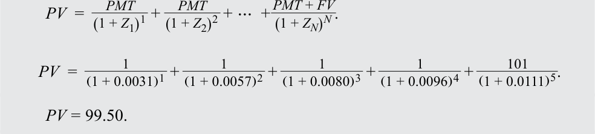
- Calculate the price (per 100 par value) of a five-year Australian government bond with a 0.80% coupon given the spot rates shown in Exhibit 3.
- Tính giá (trên mỗi 100 đơn vị mệnh giá) của một trái phiếu chính phủ Úc kỳ hạn 5 năm có lãi suất coupon 0,80% với các lãi suất giao ngay được hiển thị trong Bảng 3.
Solution:
Lời giải:
99.99. To calculate the price of the bond, we use Equation 1 and the spot rates provided for each cash flow.
99,99. Để tính giá của trái phiếu, chúng ta sử dụng Phương trình 1 và các lãi suất giao ngay được cung cấp cho từng dòng tiền.
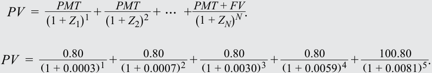
PV = 99.99
$PV = 99.99$
- Calculate the YTM of the five-year Canadian government bond, using the price obtained in Question 1.
- Tính YTM của trái phiếu chính phủ Canada kỳ hạn 5 năm, sử dụng mức giá thu được trong Câu hỏi 1.
Solution:
Lời giải:
1.104%. Instead of solving for the price, we use Equation 1 to solve for the YTM, the IRR that equates the price computed in Question 1 with the present value of future cash flows. In Microsoft Excel or Google Sheets, the RATE or IRR function can be used to solve for r .
1,104%. Thay vì giải tìm giá, chúng ta sử dụng Phương trình 1 để giải tìm YTM, tức IRR làm cân bằng mức giá được tính trong Câu hỏi 1 với giá trị hiện tại của các dòng tiền tương lai. Trong Microsoft Excel hoặc Google Sheets, hàm RATE hoặc IRR có thể được sử dụng để giải tìm $r$.
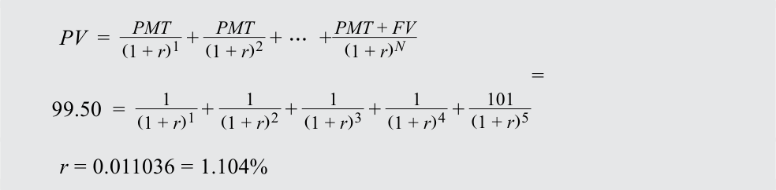
Notice that the yield of the coupon bond is slightly below the five-year spot rate.
Hãy chú ý rằng lợi suất của trái phiếu trả coupon thấp hơn một chút so với lãi suất giao ngay 5 năm.
QUESTION SET
BỘ CÂU HỎI (QUESTION SET)
- True or false: In practice, a spot curve is created by calculating the yields-to-maturity on recently issued coupon-paying government bonds of varying maturities.
-
A. True
-
B. False
- Đúng hay sai: Trên thực tế, đường cong lãi suất giao ngay (spot curve) được tạo ra bằng cách tính lợi suất đáo hạn trên các trái phiếu chính phủ trả coupon mới được phát hành gần đây có các kỳ hạn khác nhau.
-
A. Đúng (True)
-
B. Sai (False)
Solution:
Lời giải:
True. While zero-coupon government risk-free bonds would be preferable, in practice, the spot curve is created using yields on recently issued coupon-paying government bonds and linear interpolation. These bonds best satisfy the conditions for term structure analysis.
Đúng (True). Mặc dù các trái phiếu chính phủ phi rủi ro không trả lãi định kỳ sẽ được ưu tiên hơn, nhưng trên thực tế, đường cong lãi suất giao ngay được tạo ra bằng cách sử dụng lợi suất trên các trái phiếu chính phủ trả coupon mới được phát hành gần đây và phương pháp nội suy tuyến tính. Những trái phiếu này thỏa mãn tốt nhất các điều kiện cho việc phân tích cấu trúc kỳ hạn.
- Determine the missing word in the following sentence: Because there are usually limited data to calculate yields for the full range of maturities, it is usually necessary to ____ between observed yields to complete curve data.
- Xác định từ còn thiếu trong câu sau: Bởi vì thường có dữ liệu hạn chế để tính lợi suất cho đầy đủ các kỳ hạn, nên thông thường cần phải ____ giữa các lợi suất quan sát được để hoàn thiện dữ liệu đường cong.
Solution:
Lời giải:
Because there are usually limited data to calculate yields for the full range of maturities, it is usually necessary to interpolate between observed yields to complete curve data.
Bởi vì thường có dữ liệu hạn chế để tính lợi suất cho đầy đủ các kỳ hạn, nên thông thường cần phải nội suy (interpolate) giữa các lợi suất quan sát được để hoàn thiện dữ liệu đường cong.
- Calculate the price and yield-to-maturity of a 2.5% coupon, five-year bond given the following spot rates. Assume annual compounding.
- Tính giá và lợi suất đáo hạn của một trái phiếu kỳ hạn 5 năm, lãi suất coupon 2,5% với các lãi suất giao ngay sau đây. Giả định ghép lãi hàng năm.
| 1-year | 3.000% |
|---|---|
| 2-year | 2.800% |
| 3-year | 2.600% |
| 1 năm | 3,000% |
|---|---|
| 2 năm | 2,800% |
| 3 năm | 2,600% |
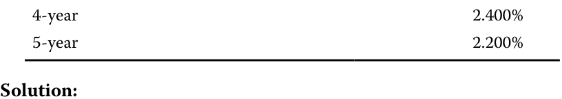
The price is 101.314.
| 4 năm | 2,400% |
|---|---|
| 5 năm | 2,200% |
Lời giải:
Mức giá là 101,314 (hoặc 101,34 theo làm tròn bên dưới).
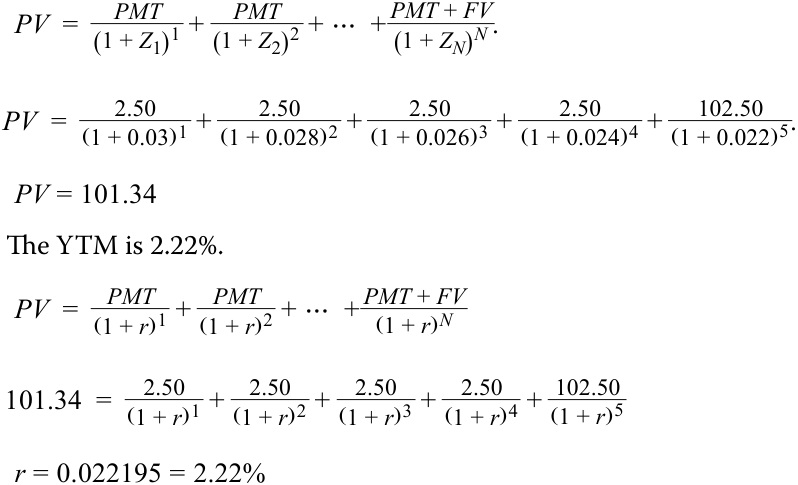
- Suppose we observed the following term structure for Canadian government bonds. Calculate the price of a 0.50% coupon, three-year Canadian government bond.
YTM là 2,22%.
- Giả sử chúng ta quan sát thấy cấu trúc kỳ hạn sau đây đối với trái phiếu chính phủ Canada. Hãy tính giá của một trái phiếu chính phủ Canada kỳ hạn 3 năm, lãi suất coupon 0,50%.
| Maturity | Yield-to-maturity |
|---|---|
| 1-Year | 1.1000% |
| 2-Year | 0.9500% |
| 3-Year | 0.7951% |
| 4-Year | 0.5700% |
| 5-Year | 0.3100% |
| Kỳ hạn (Maturity) | Lợi suất đáo hạn (Yield-to-maturity) |
|---|---|
| 1 năm (1-Year) | 1,1000% |
| 2 năm (2-Year) | 0,9500% |
| 3 năm (3-Year) | 0,7951% |
| 4 năm (4-Year) | 0,5700% |
| 5 năm (5-Year) | 0,3100% |
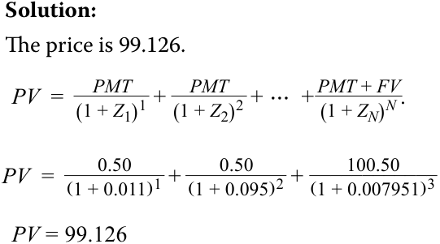
- Example 1 includes a question for a 0.50% coupon, three-year Canadian government bond, in which the bond’s price is the same as the 99.126 price in Question 4 above. Contrast the Canadian spot curves in Example 1 and Question 4 and explain why these two different yield curves produced the same pricing result.
Lời giải:
Mức giá là 99,126.
Solution:
- Ví dụ 1 (trong sổ làm việc Excel đi kèm) có bao gồm một câu hỏi cho một trái phiếu chính phủ Canada kỳ hạn 3 năm, lãi suất coupon 0,50%, trong đó giá của trái phiếu cũng giống như mức giá 99,126 trong Câu hỏi 4 ở trên. Hãy đối chiếu các đường cong lãi suất giao ngay của Canada trong Ví dụ 1 và Câu hỏi 4, đồng thời giải thích tại sao hai đường cong lợi suất khác nhau này lại tạo ra cùng một kết quả định giá.
Example 1 has an upward-sloping term structure, while in Question 4, the term structure is downward sloping. An important similarity is that, despite the vast difference in starting points (i.e., the one-year spot rates)
Lời giải:
Ví dụ 1 có một cấu trúc kỳ hạn dốc lên (upward-sloping), trong khi ở Câu hỏi 4, cấu trúc kỳ hạn lại dốc xuống (downward sloping). Một điểm tương đồng quan trọng là, bất chấp sự khác biệt rất lớn về điểm xuất phát (tức là lãi suất giao ngay 1 năm)